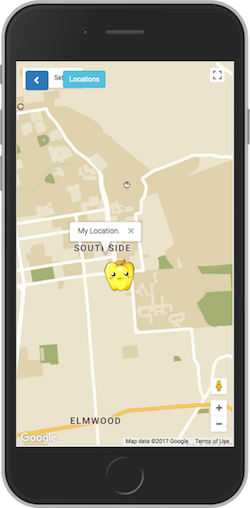
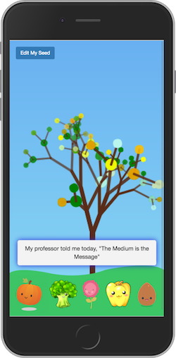
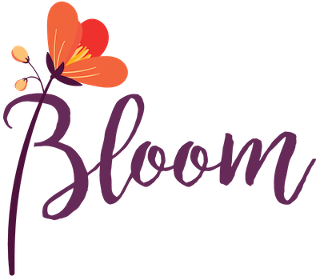
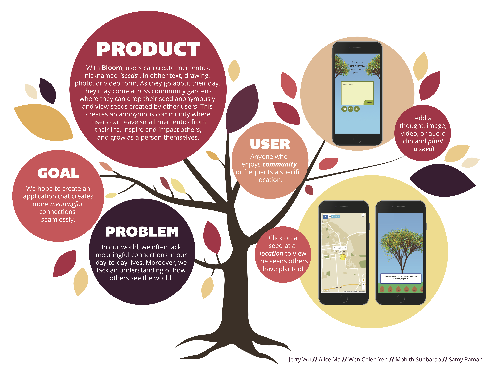

I'd love to hear from you! Feel free to shoot
me an email at


Bloom is a group effort with some of the greatest people I've ever worked with! We knew we wanted to emulate an interaction reminiscent of a space such as a coffee shop where the main focus is interacting with your physical location, and thus by extension, with the people around you.
We thought about the physical experience of leaving your mark behind (by carving your initials into a wooden bench, perhaps?) and of coming across someone else's mark days (weeks? months? years?) later and wondering what that person was thinking in the moment.
And that was how Bloom came about!
We realized that there are many people who frequent specific locations every day and enjoy community, but seem to find something lacking in their lives. With Bloom, users can create mementos, nicknamed "seeds", of either text, drawing, photos, or videos. As they go about their day, they may find community gardens, where they can drop their seed anonymously and view the seeds created by other users. This creates an anonymous community where users can leave small mementos from their lives, inspire and impact others, and grow as people themselves.
As a web app, Bloom was built using the Ruby on Rails framework.
On the front end, we experimented with various JavaScript libraries and plugins, and we also played around with drawing fractal trees on HTML5 canvases when we planted our seeds.
Then, we bound a user's seed to their seed location the Google Maps API and utilized Active Record to query the database for our seed messages.


It seems that in general, people tend to have specific preferences about where they do work, whether at a cafe or at home. Our users go to cafes with a purpose and often enjoy the environment as a result. In terms of making small talk with friends and baristas, most agreed that small interactions at cafe are important. Although a few users said that small talk was not the main reason why they enjoyed working at cafes more, the casual nature of the environment allowed them to be more at ease and focused.
They also often enjoy consuming media in text form instead of audio or sound. For some, the convenience factor of listening on the go leads to audio being their medium of choice, but when given ample time, users typically enjoy being able to read primary sources rather than watch a video newscast. Reading also creates a more immersive experience, engaging the user on a deeper level than simply watching video or listening. One user mentioned how watching a newscast feels like the same thing over and over again, implying that for the interaction itself, content may not be as important as the medium.
When asked whether they noticed artifacts that others have left behind at a given location, such as graffiti or notes on a page, some users who have experienced this phenomenon mentioned that noticing these small artifacts had an impact on their mood in both positive and negative ways depending on the situation. This impact suggests that although individuals have different experiences in a given space, the shared aspect of the space may still affect others indirectly in observing what is left behind. One user even mentioned that she leaves inspirational notes in her textbooks to pass it forward, as she would feel better if she found a note while studying for a class.
Based on our insights, we decided to continue with our metaphor of the community garden, creating a shared space based on location to allow users to contribute their thoughts (“grow” the plant).
From an implementation standpoint, we decided to minimize the number of views necessary to create a seamless user experience, choosing to prompt users with suggestions as they get to the next step rather than bombarding them with a list of instructions. Cooling down the media is key to our interaction, so in order to emphasize user interaction over spoonfeeding content, we chose to have the application be a sandbox for the user to play around with different media forms (i.e. text, audio, visual) until an event occurs. Through this interaction, we hope to inspire users and allow them to experience everyday locations in a different light.
Once we had completed building the hi-fi prototype, we began the process of user testing. After doing a heuristic analysis with our users, we found that we had violated the following heuristics:
| Rating | Heuristic | Description |
|---|---|---|
| 3 | Error Prevention | There is no system feedback when users have their location services turned off and are unable to interact properly with the map as a result |
| 2 | Consistency & Standards | The maps view is aesthetically and functionally inconsistent with the other two views (home page and branch view) |
| 4 | User Control & Freedom | User interaction with the map view is unintuitive as there is no clear indication of what to do when on the map (ie. explore) or how to interact with the seed (ie. going to the branch view) |
| 4 | User Control & Freedom | On branch view, it is unclear to the user how they are able to close out of messages and plant a seed from their own storage |
| 3 | Visibility of System Status | On the branch view, when the tree reaches maximum height and is removed, there is no clear indication whether this is a deliberate removal or if this is an error |
We then reiterated on our prototype and incorporated this feedback into our final version of the application.
We titled our application “Bloom”. This title correlates with our seed metaphor and conveys the idea of inspiration and the start of something new. There is a great deal that is blooming when using this application —— the creation of new ideas, of new community, and new inspirations.
We created the logo with the mindset of using flowery colors to match the theme and aesthetic of our application. We chose a script font because it was natural rather than being rigid. This encapsulated the fun-loving and spontaneous nature of our interaction
We had a chance to present our app at a poster session and, in keeping with the theme of our project, we designed the poster in the shape of a tree:
